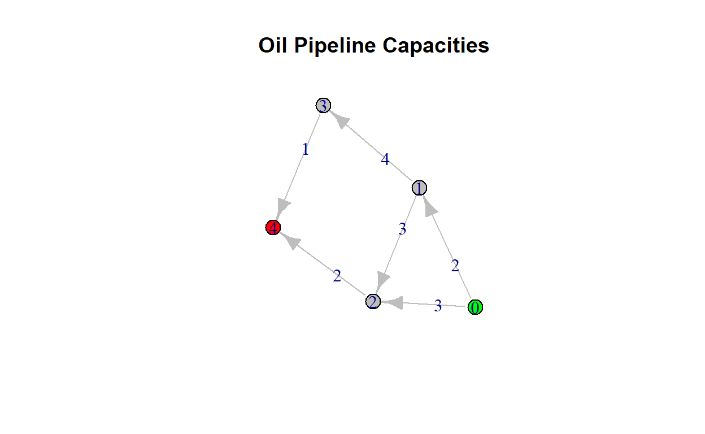
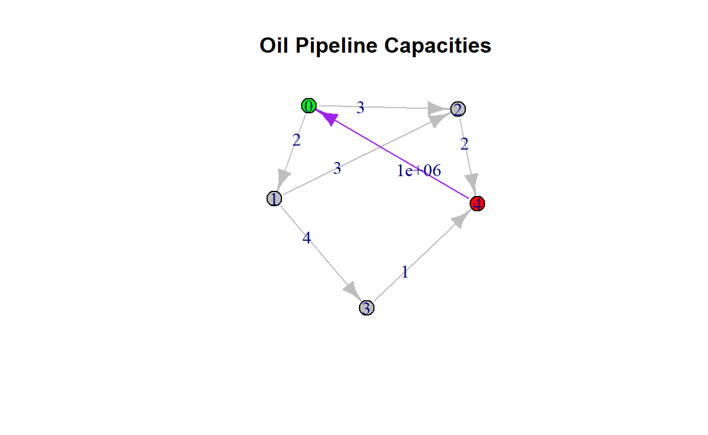

In this post we will walk through how to make a maximum flow decision using network flows and linear programming.
One classic problem in Network Flows and
Optimization is called the Max-Flow Problem.
This takes any two nodes in a network, s and t
and attempts to send as much of a resource (or multiple) from
s to t. This is called a flow,
and the flow which maximizes the total bandwidth of the network is
called the maximum flow.
First, the problem starts with an objective: to
maximize flow. These are denoted as,
\[x_{ij} = flow \: on \: node_i \: to \: node_j \:(or \: on \: arc \: (i,j))\]
Second, the problem has a set of constraints, these are called the
arc capacities. These are denoted as,
\[u_{ij} = maximum \:amount \:of \: feasible \: flow \: on \: node_i \: to \: node_j \:(or \: on \: arc \: (i,j))\] Last, the network graph is supplied as a set of connections under the traditional network structure:
\[ G = (N,E) \]
For our problem, the feasible flow is going to be in units of millions of barrels of oil per hour that will pass through an arc of pipeline.
The source for our network is indicated in green and sink in red.
nodes <- data.frame(id = c(0:4), color = c("green", rep("grey", 3), "red"))
edges <- data.frame(from = c(0,0,1,1,3,2), to = c(1,2,2,3,4,4), capacity = c(2,3,3,4,1,2), color = "grey")
nodes id color
1 0 green
2 1 grey
3 2 grey
4 3 grey
5 4 rededges from to capacity color
1 0 1 2 grey
2 0 2 3 grey
3 1 2 3 grey
4 1 3 4 grey
5 3 4 1 grey
6 2 4 2 greyg <- igraph::graph_from_data_frame(d = edges,
directed = TRUE,
vertices = nodes)
plot(g, edge.label = E(g)$capacity,
main = "Oil Pipeline Capacities",
vertex.color = V(g)$color,
edge.color = E(g)$color)
In order to model this problem, we need to put a very large capacity
from the source node to the sink node, these
are s and t mentioned above. We have given
them node names 0 and 4 respectively in the
dataframe for nodes.
BIG_M <- 1000000
edges <- rbind(edges, data.frame(from = c(4),
to = c(0),
capacity = c(BIG_M),
color = "purple"))
# Never hurts to add an id
edges$id <- 0:(nrow(edges)-1)
g <- igraph::graph_from_data_frame(d = edges,
directed = TRUE,
vertices = nodes)
plot(g,
edge.label = E(g)$capacity,
main = "Oil Pipeline Capacities",
vertex.color = V(g)$color,
edge.color = E(g)$color)
The next step is to set up the optimization. Lets do that now. There are 3 key ingredients.
Objective
Constraints
Directions
We want to build the constraint matrix, which has 2 parts.
Arc Capacity Constraints
Node Flow Constraints
The Arc Capacity Constraints are the first we
address.
The Amat, or A matrix, is the arc matrix which contains
the upper bounds. Since linear programming relies on the resource
matrix, we need one row for each arc, our dimensions for variable flow
selection are the number of arcs also. So this means we need an
identity matrix for the rows of arcs and columns of
arcs.
Amat <- matrix(0, nrow = nrow(edges), ncol = nrow(edges))
Amat_dir <- rep("<=", nrow(Amat))
Amat_rhs <- c()
for(i in 1:ncol(Amat)){
Amat[i,i] <- 1
Amat_rhs <- c(Amat_rhs, edges$capacity[i])
}
Amat [,1] [,2] [,3] [,4] [,5] [,6] [,7]
[1,] 1 0 0 0 0 0 0
[2,] 0 1 0 0 0 0 0
[3,] 0 0 1 0 0 0 0
[4,] 0 0 0 1 0 0 0
[5,] 0 0 0 0 1 0 0
[6,] 0 0 0 0 0 1 0
[7,] 0 0 0 0 0 0 1Amat_rhs[1] 2e+00 3e+00 3e+00 4e+00 1e+00 2e+00 1e+06Amat_dir[1] "<=" "<=" "<=" "<=" "<=" "<=" "<="The Node Flow Constraints are the next to take care
of.
For each node, we need to match its from node and
to node with the appropriate inflow and outflow. If it
matches an inflow arc, this is increase, so 1
is in the arc column. If it matches an outflow arch, this
is decrease, so -1 is in the arc column. Otherwise
0 remains as the placeholder. The sign here is
== because they must match (i.e., supply = demand). If we
require excess at certain points we can set this demand to be higher
than zero, but we will not do that here.
Bmat <- matrix(0, nrow = nrow(nodes), ncol = nrow(edges))
Bmat_dir <- rep("==", nrow(Bmat))
Bmat_rhs <- rep(0, nrow(Bmat))
for(i in 1:nrow(Bmat)){
node_id <- nodes[i, "id"]
for(j in 1:ncol(Bmat)){
edge_from <- edges[j,"from"]
edge_to <- edges[j, "to"]
edge_id <- edges[j, "id"]
if(node_id == edge_from){
Bmat[i,j] = -1
}
else if(node_id == edge_to){
Bmat[i,j] = 1
}
else{
Bmat[i,j] = 0
}
}
}
Bmat [,1] [,2] [,3] [,4] [,5] [,6] [,7]
[1,] -1 -1 0 0 0 0 1
[2,] 1 0 -1 -1 0 0 0
[3,] 0 1 1 0 0 -1 0
[4,] 0 0 0 1 -1 0 0
[5,] 0 0 0 0 1 1 -1Bmat_dir[1] "==" "==" "==" "==" "=="Bmat_rhs[1] 0 0 0 0 0Next, the objective is going to be 0 for all values,
except our final flow. This we want to maximize.
Now we unite everything together and drop it into the solver.
Remember, we are trying to maximize flow. So specify
max.
f.cons <- rbind(Amat, Bmat)
f.rhs <- c(Amat_rhs, Bmat_rhs)
f.dir <- c(Amat_dir, Bmat_dir)
results <- lp(direction = "max",
objective.in = f.obj,
const.mat = f.cons,
const.dir = f.dir,
const.rhs = f.rhs)
results$solution[1] 1 2 0 1 1 2 3Since the results$solution contain the maximum flow we
can push through the pipes as a system, we can add this into our flow
component of the edges dataframe.
The visual indicates that 2/3 of the capacity was
shipped to node 2, and 1/2 to
node 1. After this the next best transfer was from
node 2 to node 4 maxed out at
2/2. This is indicated in red. The arcs that have flow are
indicated in black, and no flow is indicated by grey. The maximum flow
arc is just an artificial arc that indicates the maximum
flow, this is indicated in purple.
Lastly from the node 1 to node 3
1/4 of the capacity was sent. Then from node 3
to node 4 was maxed out at 1/1.
Posterior analysis to this model output tells us that sending
2 million tons of oil from the source to
destination 2 and 1 million tons of oil from
the source to destination 1 will push as much
flow to destination 4 as we possibly can.
# Set the flow
edges$flow <- results$solution
# If the arc is flowing oil, change to black
edges$color[which(edges$flow > 0)] <- "black"
# If the arc is at capacity change it to red
edges$color[which(edges$flow == edges$capacity)] <- "red"
# Last flow is purple
edges$color[nrow(edges)] <- "purple"
g <- igraph::graph_from_data_frame(d = edges,
directed = TRUE,
vertices = nodes)
# Make it look a little more appealing
L = cbind(1:5, 1:5)
CURVE = c(0,0.15, 0.3, 0.45, 0, -0.15, -0.3, 0, 0.15, 0) * 5
# Plot
plot(g,
layout = L,
edge.curved = CURVE,
edge.label = paste("(",E(g)$flow,
",",
E(g)$capacity, ")",
sep=""),
main = "Oil Pipeline Flow | (flow, capacity)",
vertex.color = V(g)$color,
vertex.size = 25,
vertex.label.cex = 1.6,
edge.color = E(g)$color,
edge.width = E(g)$flow*2)visNet_nodes <- nodes %>%
dplyr::mutate(label = paste("Location ", id),
font.size =10,
type = "black",
shape = "circle",
font = 12)
visNet_edges <- edges %>%
dplyr::mutate(label = paste("(",flow,",",capacity,")",sep=""),
length = 250,
width = flow*2,
arrows = "to")
visNetwork(visNet_nodes,
visNet_edges,
width = "100%",
main = "Maximum Oil Flow | (flow, capacity)")Example taken from the following sources:
Winston., Wayne. Operations Research, Applications and Algorithms 4th Edition.